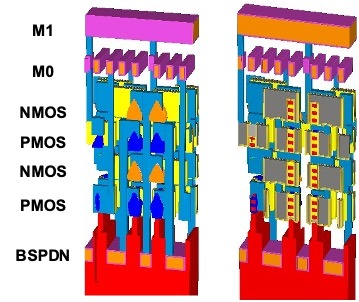
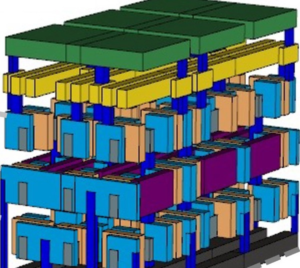
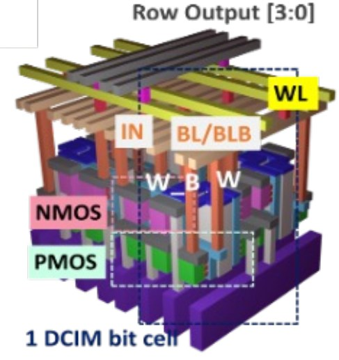
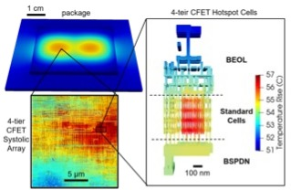
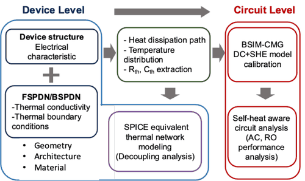
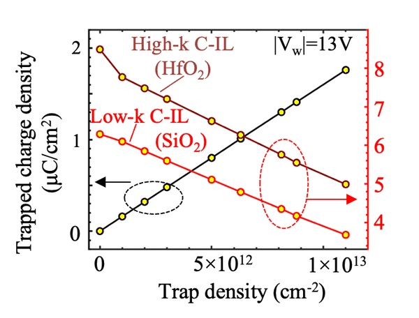
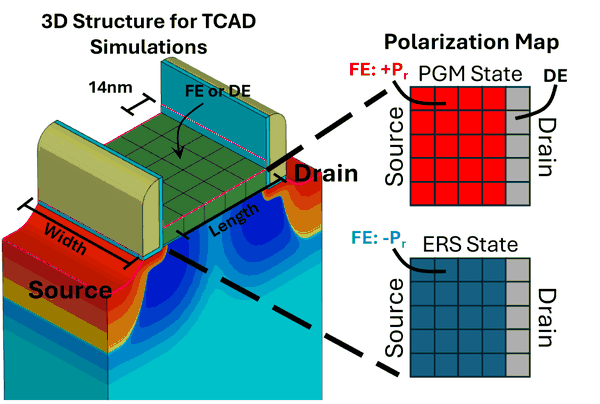
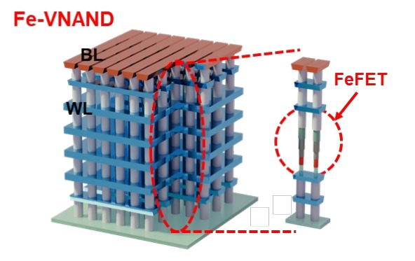
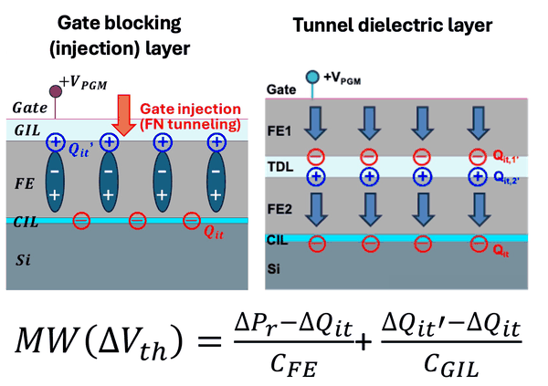

3D Logic & SRAM DTCO/STCO 4 entries
[L1]
MATRIX-A5: An Open-Source CFET PDK with CFlex Track-Mixing Libraries for RTL-to-GDSII DTCOUnder review
IEEE Journal on Exploratory Solid-State Computational Devices and Circuits (JXCDC), 2026

[L2]
DTCO of Multi-Tier CFETs: Ultimate Logic and SRAM Scaling of A5 Technology and Beyond
IEEE International Electron Devices Meeting (IEDM), 2025

[L3]
3-Tier SRAM Complementary FET (CFET) High Density (HD) Cell Design at A5 Node
IEEE Transactions on Electron Devices (TED), 2025

[L4]
3D Digital Compute-in-Memory Benchmark with A5 CFET Technology: An Extension to Look-up-Table Based Design
IEEE Transactions on VLSI Systems (TVLSI), 2025
Reliability & Electro-Thermal Co-Design 3 entries

[R1]
AI-Accelerated, Layout-Resolved Electro-Thermal Analysis for Multi-Tier CFET LogicSubmitted
IEEE International Reliability Physics Symposium (IRPS), 2027

[R2]
Self-Heating in GAA Nanosheet FETs with Integrated Back Side Power Delivery Network: Device to Circuit Electro-Thermal Analysis and Implications
IEEE International Reliability Physics Symposium (IRPS), 2026
[R3]
Aging-Aware Design Verification Methods Under Real Product Operating Conditions
IEEE International Reliability Physics Symposium (IRPS), 2019
Ferroelectric Device & Memory Reliability 4 entries

[F1]
Channel-Side Interlayer Engineering in Laminated FeFETs: Trap-Driven Optimization of Memory Window, Retention, and Disturb in Ferroelectric NAND Flash
IEEE International Reliability Physics Symposium (IRPS), 2026

[F2]
On the Localized Ferroelectric Phase Variation in Scaled FeFET: Experiments and Modeling
IEEE International Electron Devices Meeting (IEDM), 2025

[F3]
Modeling Dynamic Interplay Between Charge Traps and Polarization for Memory Window Enhancement in Gate Injection Layers
IEEE International Reliability Physics Symposium (IRPS), 2025

[F4]
A Comprehensive Modeling of Gate Stack Interlayer Engineering for Ferroelectric Vertical NAND
IEEE Device Research Conference (DRC), 2025 · Best Paper Award, Runner-Up
Tutorial Presentation 1 entry
[T1]
MATRIX Open-Source PDKs for Advanced DRAM and Sub-1-nm CFET Logic: From Device Models to RTL-to-GDSII Design-Technology Co-Optimization
Asia and South Pacific Design Automation Conference (ASP-DAC), 2027
Five of these appeared at IEEE IRPS (2019, 2025, 2026 ×2, 2027).